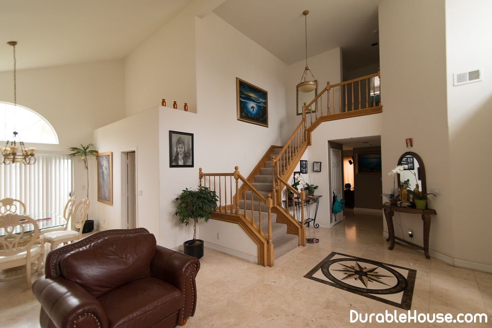

All you wanted to know about the interior stairs
Despite the apparent simplicity of the choice and arrangement of the interstore ladder, To think about its design needs at the stage of calculating the foundation of your house.
There are a lot of options for interior staircases, as well as their classifications. If Adhere to the most simple, then the stairs are divided into marching and screw. Local They can be basement, attic, mansard, and if they are divided into Construction, it is possible to distinguish such types: ladders on a metal kosoura, on a wooden Kosovra, on the bowstring, on the monoliths, monolithic with wood paneling, screw (Mothy) stairs.
Climbing and descending the stairs should be as convenient and Safe. The fences should be located with maximum convenience, and the steps should Have such a height and width to provide convenience for the step.
Stairs are popular from stainless steel. It is allowed to use ordinary steel.
The average cost of an interstore ladder of black painted metal is up to 1.5 thousand. Cu, and from stainless steel - up to 3,5 thousand cu. Such a price is relevant if the distance from Floor to ceiling is 3 m.
Another popular direction is stairs made of solid wood or glued wood. In Belarus Some manufacturers offer such stairs of ash, beech, oak and other species. Pine Will cost up to 1 thousand cu, but the pine is soft and quickly covered with dents. Solid wood Type oak will cost about 6 thousand dollars.
What determines the shape of the ladder march?
The shape of the ladder march depends on the size of the opening in the floor, and also from the place that The owner can take him to the stairs in his house. Geometrical construction of stairs It is recommended to carry out on a stage before the beginning of finishing works. Before proceeding Finishing, it is necessary to determine the purpose of the staircase (interstorey, mansard, Attic, basement) and think about its design.
The type of the ladder is determined before the creation of its project. But if the house is already built, and you are on the stage Design "forgot" about the ladder, to help you will come designers who can Offer an individual solution.
The main thing is safety and design
Any kind of staircase in your house you can use without risers. Visually such The staircase creates an impression of lightness in the interior. But such a ladder is not recommended Place next to the kitchen table or countertop. In this case, the optimal Stairs using the steps. They will prevent debris from getting into the Kitchen space. Also, the staircase with risers is more secure. Exactly It is recommended to set a blind staircase if there are small children in the house. Also The safety of the openwork ladder can be increased by using half-steps. They Reduce the gap between the steps, and it does not get a child's foot.
What materials are used to make stairs?
The choice of materials for making the interstore ladder is the next step. For stairs Use metal structures, concrete, chipboard, natural stone (for example, marble), Wood, high-strength glass.
If you want to choose wood, then you need to make sure that it is Without cracks, chips and roughness. And also on its surface should not be dark Spots.
What to take into account when designing an interstore ladder?
Adhere to the optimal size of the steps, the width between them and the angle of the stairs ( figure 1 ).
Work on the design of the ladder must start from the drawing and calculate it Structure. Such a calculation necessarily provides:
- staircase location
- room dimensions
- The height of the ladder and the number of steps.
The next step is calculating the ladder and projecting the dimensions.
This operation includes:
- the shape and height of the handrail;
- the width of the steps. Their number must be multiplied by the width of the ladder in order to obtain Projection size.